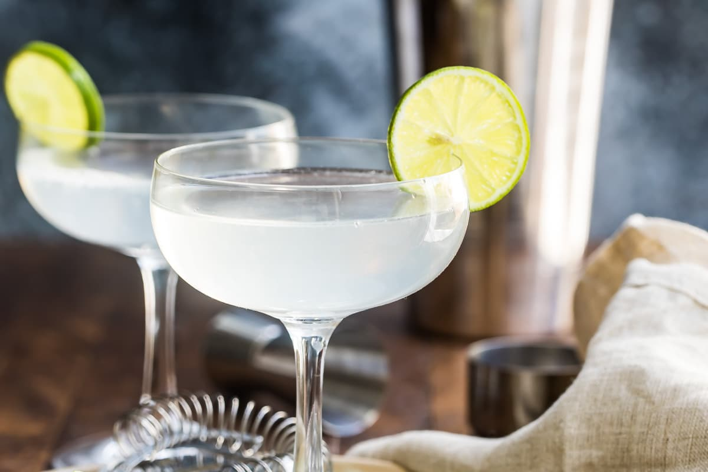

Cocktails: The Gimlet

A timeless classic
The gimlet is a versatile glassic that accentuates the flavors of whatever liqour is used
The history of the gimlet is fancy and interesting
A bit of personal perspective on the drink
The best thing about this drink is how easily you can switch out an ingredient and still get a great drink out of it!
Tools
- Coupe Glass A classic glass with a long stem and wide shallow cup
- Jigger a small measuring cup for liquids
- Shaker Tin A two part glass for emulsifying the Ingredients
- Hawthorn Strainer a compound strainer for straining the drink
- Fine Mesh Strainer for getting rid of those last ice slivers
Ingredients
- Ice for shaking
- 2 oz Gin
- 1 oz Lime
- 3/4 oz Simple Syrup
- Simple Syrup - 1:1 Sugar:Water
- Lime wheel
Preparation
Preparation of the gimlet has a lot of versatility in its ingredients.
Below is the most traditional method with some notes afterwards for options.
- Add ice and a bit of water to your coupe and set it aside to chill
- Add all ingredients to the shaker start with the cheapest ingredients! First the sugar, then lemon, and finally the gin. Just in case you mess up
- Shake for 30 seconds
- Double strain into a chilled coupe glass
- Place the lime wheel on the lip of the glass and enjoy!
Switch it up
- Something sweet - Try different sweeteners like honey or agave for more floral or vegetal flavors
- Garden Variety - A world of citrus is available! try a variety or a blend and see how they play with the sugar and liqour
- Around the bar - Don't like Gin? Try Vodka, Rum, Tequila, or liqour